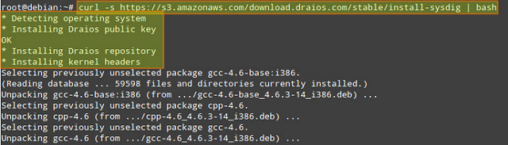
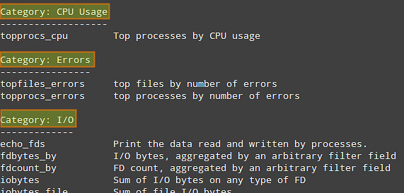
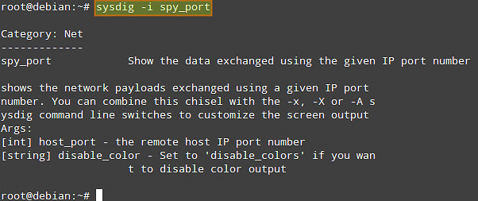
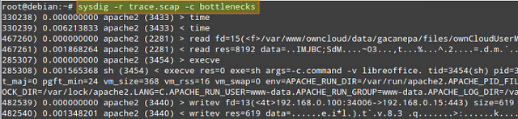
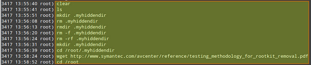
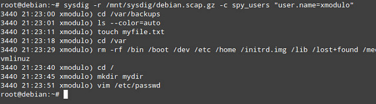
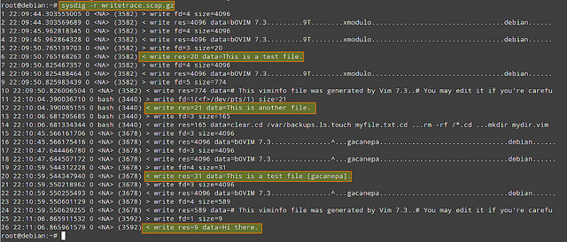

目录 [−]
中文编译地址：https://linux.cn/article-4341-1.html by GOLinux
英文原文地址：http://xmodulo.com/monitor-troubleshoot-linux-server-sysdig.html 作者： Gabriel Cánepa
当你需要追踪某个进程产生和接收的系统调用时，首先浮现在你脑海中的是什么？你可能会想到strace，那么你是对的。你会使用什么样的命令行工具来监控原始网络通信呢？如果你想到了tcpdump，你又作出了一个极佳的选择。而如果你碰到必须追踪打开的文件（在Unix意义上：一切皆文件）的需求，可能你会使用lsof。
strace、tcpdump以及lsof，确实是些伟大的工具，它们应该成为每个系统管理员工具集之中的一部分，而这也正是你为什么应该爱上sysdig的原因。它是一个强大的开源工具，用于系统级别的勘察和排障，它的创建者在介绍它时称之为“strace+tcpdump+lsof+上面点缀着lua樱桃的绝妙酱汁”。抛开幽默不说，sysdig的最棒特性之一在于，它不仅能分析Linux系统的“现场”状态，也能将该状态保存为转储文件以供离线检查。更重要的是，你可以自定义sysdig的行为，或者甚至通过内建的（你也可以自己编写）名为凿子（chisel）的小脚本增强其功能。单独的凿子可以以脚本指定的各种风格分析sysdig捕获的事件流。
在本教程中，我们将探索sysdig的安装及其基本用法，在Linux上实施系统监控和排障。
安装Sysdig
对于本教程，由于为了简便、缩短安装流程以及版本的不可知，我们将选择使用官方网站提供的自动化安装过程。在自动化过程中，安装脚本会自动检测操作系统并安装必需的依赖包。
以root身份运行以下命令来从官方apt/yum仓库安装sysdig：
|
|

安装完成后，我们可以通过以下方法调用sysdig来感受一下它：
|
|
我们的屏幕将马上被系统上发生的所有事件填满，对于这些信息，不便于我们做更多操作。要进一步处理，我们可以运行：
|
|
来查看可用的凿子列表。

默认有以下类目可用，各个类目中分布有多个内建的凿子。
- CPU Usage：CPU使用量
- Errors：错误
- I/O
- Logs：日志
- Misc：混杂
- Net：网络
- Performance：性能
- Security：安全
- System State：系统状态
要显示指定凿子上的信息（包括详细的命令行用法），运行以下命令：
|
|
例如，我们可以检查“网络”类目下关于spy_port凿子的信息：
|
|

凿子可以通过过滤器（可同时应用于实时数据和记录文件）组合，以获取更多有用的输出。
过滤器遵从“类.字段”结构。例如：
- fd.cip：客户端IP地址。
- evt.dir：事件方向，可以是‘>’用于进入事件，或‘<’用于退出事件。
完整的过滤器列表可以通过以下命令显示：
|
|
在本教程剩余部分，我将演示几个sysdig的使用案例。
Sysdig实例： 服务器性能排障
假定你的服务器发生了性能问题（如，没有回应，或者重大的回应延迟）。你可以使用瓶颈凿子来显示当前10个最慢系统调用的列表。
使用以下命令在存活服务器上进行实时检查。“-c”标识，后跟凿子名称告诉sysdig运行指定的凿子。
|
|
或者，你可以离线对服务器实施性能分析。在此种情况下，你可以保存完整的sysdig记录到文件，然后像下面这样针对记录运行瓶颈凿子。
首先，保存sysdige记录（使用Ctrl+c来停止收集）：
|
|
收集完记录后，你可以运行以下命令来检查捕获间隔中最慢的系统调用：
|
|

你需要关注栏#2，#3和#4，这些分别表示执行时间、进程名和PID。
Sysdig实例： 监控交互用户活动
假定你作为系统管理员想要监控系统中交互的用户活动（如，用户在命令行输入了什么命令，以及用户去了什么目录），这时spy_user凿子就派上用场了。
让我们首先通过一些额外选项来收集一个sysdig记录。
|
|
- “-s 4096”告诉sysdig每个事件捕获4096字节。
- “-z” （与“-w”一起使用）为记录文件启用压缩。
- “-w ”保存sysdig记录到指定的文件。
在上面的例子中，我们自定义了基于每个主机的压缩的记录文件的名称。记住，你可以在任何时候按下Ctrl+c来打断sysdig的执行。
在我们收集到了合理数量的数据后，我们可以通过运行以下命令来查看每个用户的交互活动：
|
|

上面输出的第一栏表示与指定用户的活动相关进程的PID。
如果你想要定位一个指定的用户，以及只监控该用户的活动又怎么样呢？你可以通过用户名对spy_users凿子的结果进行过滤：
|
|

Sysdig实例： 监控文件I/O
我们可以使用“-p”标识来自定义sysdig记录的输出格式，并指定双引号括起来的想要的字段（如用户名、进程名，以及文件或套接口名称）。在本例中，我们将创建一个记录文件，该文件将只包含在家目录中的写入事件（我们今后可以使用“sysdig -r writetrace.scap.gz”来检测该文件）。
|
|

Sysdig实例： 监控网络I/O
作为服务器排障的一部分，你可能想要监听网络通信，此工作通常由tcpdump做。对于sysdig，可以很容易进行通信嗅探，其风格更为对用户友好。
例如，你可以检查由特定IP地址，特定进程（如apache2）提供的数据（ASCII编码格式）：
|
|
如果你想要监控原生数据传输（二进制格式），请把“-A”替换为“-X”：
|
|
要获取更多信息、实例以及案例分析，你可以查阅项目网站。相信我，会有着无限可能，但请不要仅仅局限于我所写的这些。安装sysdig，请从今天开始深入挖掘吧！
其它参考文档：